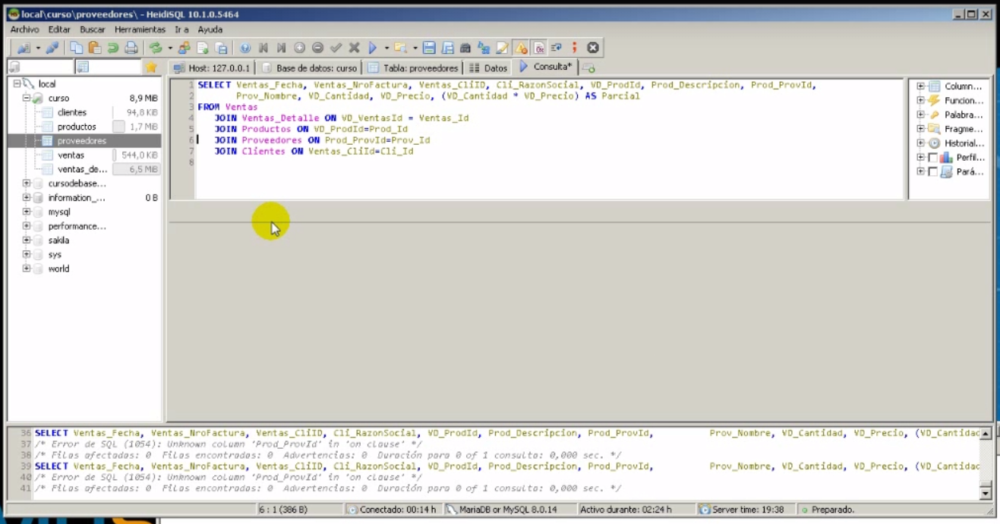

Union con Join

- Se hace la union con join se multiplica un campo y se le pone en un alias
- Vd_catidad * VD_precio as Parcial y lo pone en una columna que se llama parcial
- El orden de las uniones es muy importante dentro de los campos para que no mande error
- Join y inner join para el motor es lo mismo
- Ojo los campos calculados van entre parentesis
Nota left Join es para que te muestre los valores de la izq
Ejemplo una tabla de alumnos con sus examenes queremos que nos traiga todos los
alumnos con sus repectivos examenes pase lo que pase nos mostrara los alumnos
si tiene o no examen eso ya no importa lo que importa es el examen
LEFT JOIN A LAS TABLAS DE LA IZQ
RIGHT JOIN A LAS TABLAS DE LA DERECHA